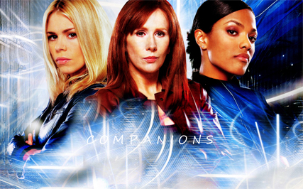

It Started with a Bang
“Doctor Who” is the most original science-fiction television series ever made. It is also one of the longest-running television shows of all time. (Virtually every other marathoner is a soap opera.) It was first broadcast in 1963, three years before “Star Trek,” and, with apologies to Gene Roddenberry, is smarter and, better yet, sillier. The U.S.S. Enterprise, for all its talking computers and swooshing doors, is a crabbed and pious Puritan village; Doctor Who tumbles through time and space in the Tardis, a ship that from the outside looks like an early-twentieth-century British police box, painted blue and bearing a sign on its door that reads “POLICE TELEPHONE. FREE FOR USE OF PUBLIC. ADVICE AND ASSISTANCE OBTAINABLE IMMEDIATELY.” Inside (it’s bigger on the inside), the Tardis has something of the character of the reading room of the British Library, if the British Library had a swimming pool and were a pub designed by someone who adored Frank Gehry, Lewis Carroll, and typewriters with missing keys.
“ ‘Doctor Who’ is the story of a lovely world in which a kind man saves everyone from harm,” Steven Moffat says. Moffat, a fifty-one-year-old Scot, started watching “Doctor Who” when he was a little boy and is now its executive producer and head writer. He says that it has two things: “scary monsters and a funny doctor.” Every week, it’s the same: the Tardis lands; the funny doctor pops out; he meets scary monsters; and then he defeats them, because he is very, very clever.
Enemies of Time and Space
Moffat is thickset and funny and full of “Doctor Who” bluster. “In the history of all science fiction,” he says, “the Dalek is the best alien that’s ever been done. Everything else is just a guy in a suit.”
The Daleks were invented by Terry Nation, who was born in Cardiff in 1930. His mother was an air-raid warden. In 1941, he survived the Cardiff Blitz. In 1955, he moved to London and started writing for the radio comedy program “The Goon Show.” He took a job writing for “Doctor Who” in 1963. He once said that he got the name “Dalek” from an encyclopedia volume that ran from “dal” to “lek.” He made that up. (“It’s absolute rubbish,” he confessed.) Really, he was just trying to think up a word that sounded super-creepy. He’d been through a blitz; he’d been close to people in the Campaign for Nuclear Disarmament. He invented a race of creatures mutated by an apocalyptic nuclear war who, in order to survive, live inside robotic shells and are so convinced of their own purity that their object is to exterminate every other race.
“I’ve had this brilliant idea for some baddies,” he said to his wife. “I’m going to call them Daleks.”
She said, “Drink your tea while it’s hot.”
The Sonic Screwdriver
The sonic screwdriver is a multifunctional tool used by The Doctor. Its most common function is that of a lockpick, but can be used to perform other operations such as performing medical scans, remotely controlling other devices, tracking alien life and, using red setting or dampers, it can control the properties of atoms and molecules on a small scale. It can, with the exception of a deadlock seal or wooden lock, open any type of lock and operate many computers, whether their origin is alien or human.
Like the TARDIS, it has become one of the icons of the programme; spinoff media such as The Sarah Jane Adventures and Torchwood have replicated its functions in devices such as the sonic lipstick, sonic blaster, sonic pen, and sonic modulator.
The sonic screwdriver was first introduced in 1968, and was used regularly throughout the Second Doctor's tenure. It became less prominent from the beginning of the Third Doctor's tenure until 1977. It was written out of the series in 1982 due to the limitations it caused when writing for the show. It then featured briefly in the 1996 Doctor Who TV Movie, before making a full return in the 2005 continuation of the series.
Wibbly-Wobbly
Things That Wobble
Newman decided to flout the genre’s conventions. In a flurry of memos (now stored in the BBC’s archives in Reading), members of his staff explored the possibilities. “The essence of S.F. is that the wonder or fairytale element shall be given a scientific or technical explanation,” one reported. “To do this there must be at least one character capable of giving the explanation.” It might not be a bad idea if this character were to have something “of the feeling of Sherlock Holmes.” But, if so, he ought to have a female Watson, because “S.F. is deliberately unsexual; women are not really necessary to it”—and so it would be wise to “add feminine interest.”
A time machine was first suggested at a meeting held on March 26, 1963. From an educational point of view, this device had a significant advantage: a hero who travels through time and space can offer lessons in both history and science. “Doctor Who” is distinctly British, and indebted to H. G. Wells. It was also influenced by the 1951 Hollywood film “The Day the Earth Stood Still,” in which an alien who travels with a shiny metal robot lands a flying saucer on the Washington Mall, in the hope of ending war on Earth. But the series, as it developed, was meant to appeal to women as much as to men, to adults as much as to children, and to revolve around a hero who is a fully realized dramatic character, not a disembodied idea. A flying saucer was proposed and rejected. “Bug-Eyed Monsters” and “Tin Robots” were discouraged (a suggestion not always honored). And a narrative structure was adopted that allows not only for extended but for infinite treatment.
Comapnions
Who Saves The Doctor?

The term "companion" refers to a character who travels with, or shares the adventures of the Doctor. In most Doctor Who stories, the primary companion acts as an audience surrogate. He or she provides the lens through which the viewer is introduced to the series. The companion character often furthers the story by asking questions and getting into trouble, or by helping, rescuing or challenging the Doctor. This designation is applied to a character by the show's producers, and appears in the BBC's promotional material and off-screen fictional terminology. Until the modern revival of the series in 2005, the term was rarely used on-screen. The Doctor also refers to the show's other leads as his "friends" or "assistants"; the British press have also used the latter term.
The Doctor's companions have assumed a variety of roles—involuntary passengers, assistants (particularly Liz Shaw), friends, and fellow adventurers; and, of course, he regularly gains new companions and loses old ones. Sometimes they return home, and sometimes they find new causes—or loves—on worlds they have visited. A few companions have died during their travels with the Doctor.
Most companions travel in the TARDIS with the Doctor for more than one adventure. Sometimes a guest character will take a role in the story similar to that of a companion, such as photographer Isobel Watkins, who plays a significant role in The Invasion (1968), or Lynda in "Bad Wolf" and "The Parting of the Ways" (2005). In the revived era, some guest characters have gained companion status such as Mickey Smith, River Song, Wilfred Mott, and Craig Owens.